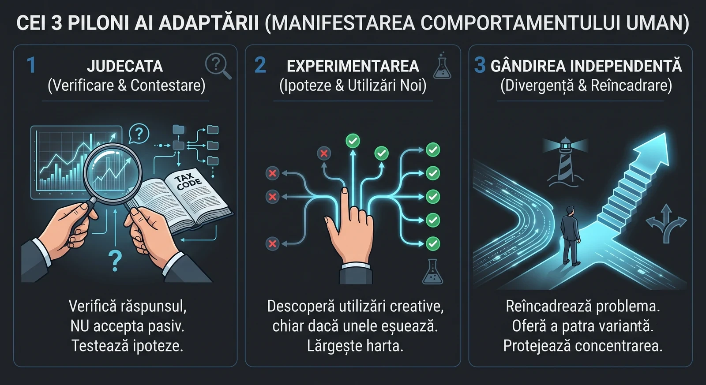

Adoptare vs. adaptare: ce înseamnă, de fapt, să lucrezi cu AI în contabilitate.
Poți să deschizi un chatbot în fiecare zi și, în tot acest timp, să lucrezi exact ca acum trei ani. Un raport Deloitte pune degetul pe rană: adoptarea AI e ușor de demonstrat și ușor de simulat. Adaptarea, nu. Iată cum arată diferența în limbaj de contabil.
// Cuprins
Zilele trecute am citit un articol publicat de Deloitte care mi-a rămas în cap mai mult decât se cade unui raport de consultanță. Titlul lui e simplu: de la adoptarea AI la adaptarea la AI. Ideea centrală e și mai simplă — și exact de aceea incomodă.
Argumentul Deloitte pornește de la o observație care sună a benchmarking corporate, dar descrie perfect propriul nostru birou. Accesul la instrumente AI a crescut cu 50% într-un singur an, spun ei, dar sub 60% dintre cei care au acces le folosesc efectiv în fluxul zilnic de muncă, iar 84% dintre organizații nu au reproiectat nimic — nici joburile, nici procesele — în jurul acestor instrumente. Cu alte cuvinte: toată lumea a primit cheia, aproape nimeni n-a intrat în casă.
Diferența dintre a primi cheia și a te muta efectiv în casă e, pe scurt, diferența dintre adoptare și adaptare. Și e o diferență pe care noi, contabilii din România, o simțim deja pe pielea noastră, chiar dacă n-o numim așa.
Care e, concret, diferența dintre adoptare și adaptare?
Adoptarea răspunde la o singură întrebare: ai deschis instrumentul? E o metrică binară, comodă, ușor de pus într-un raport către management. Ai făcut 30 de interacțiuni luna asta cu asistentul AI? Bifă. Ești „utilizator activ”. Problema e că metrica asta nu spune absolut nimic despre dacă și cum s-a schimbat munca ta după ce ai închis fereastra.
Adaptarea răspunde la o întrebare mult mai incomodă: ai folosit instrumentul ca să lucrezi altfel? Deloitte o formulează memorabil — adoptarea îți spune că cineva a deschis ușa, dar nu-ți spune nimic despre ce a devenit acea persoană de partea cealaltă a ușii. Valoarea reală a AI nu stă blocată într-un buton care așteaptă să fie apăsat. Stă în spațiul dintre om și mașină: în felul în care înveți să gândești alături de ea, s-o contrazici, să experimentezi cu ea și, în final, să-ți reconstruiești propriul mod de a lucra.
| Adoptare | Adaptare |
|---|---|
| Ai cerut AI-ului să-ți explice o speță de TVA la încasare. | Ai verificat răspunsul în Codul fiscal, ai găsit unde a scăpat o excepție și ți-ai construit un mod fix de a pune întrebarea data viitoare. |
| Ai generat un draft de politică de prețuri de transfer. | Ai refăcut întregul flux de documentare — de la colectarea datelor la structura dosarului — pentru că AI a scos la iveală ce colectai prost. |
| Ai folosit AI să-ți scrie un e-mail către client. | Ai încetat să mai scrii manual categoria întreagă de e-mailuri recurente și ți-ai făcut un mic șablon reutilizabil. |
Prima coloană e ușor de raportat și ușor de simulat. A doua coloană e cea care contează — și e exact cea pe care programele de „transformare digitală” o ratează de fiecare dată, pentru că nu știu s-o măsoare.
Adoptarea întreabă: ai folosit-o? Adaptarea întreabă: ai folosit-o ca să obții un rezultat pe care nu-l puteai obține altfel?
Cei trei piloni ai adaptării
Deloitte identifică trei comportamente umane care separă adoptatorii de cei care se adaptează. Nu sunt trăsături de caracter cu care te naști, ci comportamente pe care le poți exersa, măsura și proteja. Le-am tradus, pe rând, în munca noastră de zi cu zi — profesională, dar și personală, pentru că adaptarea la AI nu se oprește la ușa biroului.

1 · Judecata: când te încrezi în AI și când îl contrazici?
Un instrument AI valorează exact cât judecata umană pe care o aplici lângă el. Iar aici Deloitte semnalează un pericol subtil: pe măsură ce răspunsurile AI devin mai rapide, mai fluente și mai sigure pe ele ca ton, avem tendința să cedăm. Acceptăm rezultatul fără să-l verificăm, reducem controalele independente și, treptat, externalizăm exact gândirea care constituie expertiza noastră profesională. Un studiu citat de ei arată chiar că folosirea susținută a AI erodează încrederea profesioniștilor de a contesta o recomandare AI — chiar și atunci când au competența s-o facă.
Pentru un contabil, asta e miezul întregii discuții. Pentru că profesia noastră este judecată. Nu suntem plătiți să introducem cifre — suntem plătiți să știm care cifră merge unde, de ce, și ce se întâmplă dacă merge greșit.
Adoptare: întrebi AI-ul cum se înregistrează o operațiune de leasing financiar și copiezi monografia primită.
Adaptare: ceri monografia, dar o citești ca pe un draft de la un coleg junior isteț, dar neverificat. Verifici tratamentul în funcție de IFRS 16 vs. reglementările locale, confirmi dacă e chiar leasing financiar și nu operațional, și testezi ipoteza pe care AI-ul a presupus-o tăcut. Judecata ta e cea care semnează, nu a lui.
Adaptarea la nivel de judecată înseamnă să tratezi AI-ul ca pe un colaborator probabilistic, nu ca pe o sursă deterministă de adevăr. Deloitte citează un caz — Gap Inc. — unde angajații care vedeau AI ca pe un partener care are nevoie de context, iterație și feedback produceau muncă mai bună decât cei care îl tratau ca pe un automat care scoate răspunsul corect la comandă. Diferența nu era instrumentul. Era mentalitatea.
Semnalele că exersezi judecată, nu doar utilizare, sunt concrete:
- Pui la îndoială recomandarea, în loc s-o accepți pasiv.
- Verifici sursele — actul normativ, articolul, norma — nu te bazezi pe „a spus AI-ul”.
- Testezi ipotezele ascunse: ce a presupus modelul despre speța ta fără să-ți spună?
- Știi când să NU folosești AI. O parte esențială a judecății e să știi când nu te bazezi pe el — de exemplu, pentru gândire strategică.
Iar aici e paradoxul cu care ne lasă Deloitte, și care merită lipit pe monitor: cu cât AI absoarbe mai multă muncă, cu atât e mai mare nevoia de judecată umană care să-i direcționeze și să-i evalueze rezultatele — dar cu atât mai puține ocazii avem să ne formăm acea judecată. Un junior care lasă AI-ul să facă toate reconcilierile nu va dezvolta niciodată instinctul care-ți spune, dintr-o privire, că „ceva nu e în regulă cu contul ăsta”. Adaptarea reală înseamnă să protejezi deliberat ocaziile de a exersa judecata, nu să le automatizezi pe toate.
2 · Experimentarea: cum descoperi utilizări noi, nu doar cele evidente?
Dacă judecata definește cât de bine folosești AI în fluxurile pe care le ai deja, experimentarea e cea care îți dă fluxuri noi. Valoarea cea mai mare a AI, spune Deloitte, nu stă în a face aceeași muncă mai repede — stă în a-ți da libertatea să reproiectezi cum arată munca.
Problema e că experimentarea arată „ineficient” pe termen scurt. O organizație care optimizează strict pentru viteză va subinvesti sistematic în ea, pentru că a încerca ceva nou pare, la prima vedere, timp pierdut. Și totuși, într-un sondaj Deloitte, „a-i ajuta pe oameni să învețe să experimenteze cu AI” a ieșit pe primul loc între acțiunile pe care organizațiile ar trebui să le facă. Motivația există deja în oameni — 78% spun că experimentează continuu. Doar 56% se simt însă recunoscuți pentru asta.
Un contabil care adoptă folosește AI-ul pentru o singură sarcină — să zicem, redactarea unei note explicative — și atât, oricât de bine ar face-o.
Un contabil care se adaptează testează ipoteze: „Ce-ar fi dacă i-aș da AI-ului balanța ca să-mi semnaleze conturile cu variații neobișnuite înainte de închidere?” „Ce-ar fi dacă mi-aș construi un mic instrument care verifică un CIF în baza ANAF fără să știu programare?” Unele idei eșuează. Dar fiecare experiment documentat lărgește harta a ceea ce e posibil.
Al doilea exemplu nu e ipotetic — e chiar traseul pe care mulți dintre noi l-am parcurs deja, de la „nu știu să scriu o linie de cod” la „am construit un instrument care chiar merge”. Asta este experimentare adaptativă. Iar caracteristica ei nu e succesul fiecărei încercări, ci disponibilitatea de a încerca.
Deloitte insistă pe un punct important pentru oricine conduce o echipă: experimentarea nu e o trăsătură de caracter. E un comportament care poate fi proiectat, măsurat și recompensat. Concret, într-un cabinet sau departament:
- Spații sigure de încercat. Un „sprint” de câteva ore în care miza nu e dacă experimentul a reușit, ci dacă a fost făcut și notat.
- Amplificarea celor care găsesc utilizări creative, ca să-i tragă după ei pe cei blocați în tipare înguste.
- Nudge-uri mici, cu miză mică. De multe ori bariera nu e rezistența, ci incertitudinea: omul nu știe cu ce să înceapă sau se teme să nu pară incompetent.
Și un avertisment care ține de deontologia noastră: experimentarea trebuie să vină cu guardrails. Deloitte dă exemplul BBVA, unde principiul stabilit de sus e clar — AI-ul generativ e asistent, nu agent autonom; orice rezultat cere validare umană înainte să atingă un sistem. Pentru noi, care lucrăm cu date financiare și fiscale sensibile, regula e și mai strictă: experimentează pe date anonimizate sau fictive, niciodată pe datele reale ale clientului într-un instrument necontrolat. Adaptarea inteligentă și confidențialitatea nu se exclud — se condiționează reciproc.
3 · Gândirea independentă: cum îți protejezi partea pe care AI n-o poate replica?
AI-ul e excepțional la sinteză, la rezumat și la recunoașterea tiparelor în seturi mari de date. Nu e, prin construcție, o sursă de gândire divergentă — perspective contrariate, sau acel gând lateral care reîncadrează complet o problemă. Pe măsură ce AI absoarbe munca liniară și convergentă, contribuțiile distinct umane care rămân sunt exact cele care cer concentrare susținută, asumarea unui risc intelectual și disponibilitatea de a urmări o idee care nu se potrivește tiparului așteptat.
Deloitte semnalează aici o capcană pe care o cunoaștem cu toții din perioada de închidere: capcana abundenței. Acum putem produce analize, rapoarte și drafturi mai repede decât le poate cineva citi sau folosi. Speranța era că automatizarea unei părți din muncă va elibera spațiu pentru gândire reflexivă. Realitatea care se conturează e că proliferarea de conținut generat de AI poate sufoca exact acel spațiu. Adaugă la asta ce cercetătorii numesc „AI brain fry” — oboseala mintală de a supraveghea prea multe fire AI deodată — și obții contrariul concentrării.
Presupunem că AI ne va elibera timp pentru gândire profundă. În practică, adesea ne-o erodează tăcut.
Pentru un contabil bun, gândirea independentă nu e un lux — e fix diferența dintre un procesator de tranzacții și un profesionist. AI-ul îți poate spune cum se înregistrează o tranzacție standard. Nu-ți va spune că structura aleasă de client e corectă tehnic, dar riscantă la un control, și că ar exista o a treia variantă la care nimeni nu s-a gândit. Aceasta e reîncadrarea pe care n-o generează niciun model.
Adoptare: primești de la AI trei scenarii de optimizare fiscală și îl alegi pe cel recomandat.
Adaptare: citești cele trei scenarii ca punct de plecare, apoi întrebi ce ratează toate trei. Aduci contextul pe care modelul nu-l avea — istoricul clientului, apetitul lui la risc, un control recent în domeniu — și formulezi a patra variantă. AI-ul ți-a dat materia primă; reîncadrarea a fost a ta.
Cum protejezi practic această gândire, când calendarul e plin și 43% dintre profesioniști spun (tot în datele Deloitte) că lipsa de timp e cea mai mare barieră în adaptare? Câteva măsuri concrete, aplicabile și individual, nu doar la nivel de firmă:
- Blochează timp de „muncă profundă” în calendar, fără notificări — pentru spețele care chiar cer gândire, nu execuție.
- Introdu deliberat frecare când te prinzi în tiparul „prompt-and-accept”: înainte să dai mai departe un rezultat AI, oprește-te și întreabă ce idee nu ar fi generat modelul.
- Nu te grăbi să umpli timpul eliberat prin automatizare cu și mai multă muncă de rutină. Spațiul acela liber e resursa, nu risipa.
- Măsoară impactul, nu volumul. A recompensa cantitatea de muncă — sau chiar cantitatea de utilizare AI — duce la risipă și la oboseală, nu la valoare.
Ce măsurăm, de fapt: adaptare, nu doar adoptare
Trecerea de la adoptare la adaptare nu e o respingere a măsurării — e o cerere de măsurare mai bună. Metricile de adoptare nu sunt greșite; sunt incomplete. O organizație în care nimeni nu folosește AI n-are pe ce construi. Dar o organizație în care toată lumea folosește AI fără să dezvolte comportamentele care-l fac valoros a construit fundația pe nisip.
Pentru noi, ca profesie, întrebarea nu e „câți colegi au deschis luna asta asistentul AI”. Întrebarea e dacă, de partea cealaltă a ușii, gândim mai bine, verificăm mai atent, experimentăm mai curajos și ne păstrăm exact acea judecată pe care niciun model lingvistic nu o poate semna în locul nostru.
Organizațiile — și contabilii — care vor conduce în era AI nu vor fi neapărat cei cu cele mai mari rate de adoptare. Vor fi cei care au folosit AI ca să construiască ceva mai durabil: capacitatea de a gândi cu judecată, de a experimenta fără frică și de a face munca profundă pe care niciun model n-o poate replica.
Ce rămâne
Aceea nu e o poveste despre adoptare. E o poveste despre transformare. Iar la noi, unde adoptarea AI e încă printre cele mai scăzute din Europa, distincția asta nu e teorie de consultanță — e harta drumului care abia începe. Cheia am primit-o cu toții. Întrebarea care contează de aici înainte nu e dacă am deschis ușa, ci ce devenim de partea cealaltă a ei.